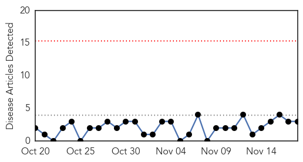
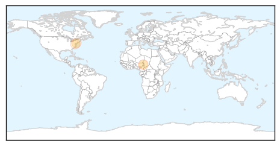
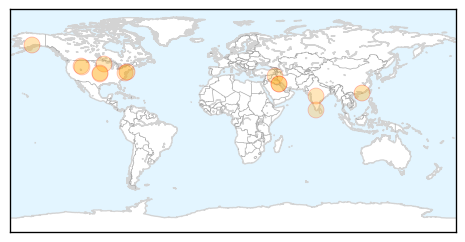

Measles
30-Day Web Trend
0 alerts, 0 warnings

30-Day Twitter Trend
0 alerts, 0 warnings
Article Locations
Article Confidences
Top Articles:
Top Tweets:
-
No tweets found for Nov 18, 2015
Influenza
30-Day Web Trend
0 alerts, 0 warnings

30-Day Twitter Trend
8 alerts, 0 warnings

Article Locations
Article Confidences
Top Articles:
- 0.989
- First case of flu in Sussex County confirmed
- 0.926
- The Hong Kong Polytechnic University (PolyU) and WHO co-organize “The 4th WHO Informal Consultation for Improving Influenza Vaccine Virus Selection”
- 0.907
- Uber to offer on-demand flu shots for a day — RT USA
- 0.845
- Pay attention to the overuse of antibiotics
- 0.836
- Two die from seasonal flu - Kuwait Times
- 0.812
- Chicken resistant to Avian Flu will emerge: WHO expert
- 0.774
- A healthier drive-thru that serves flu shots, not burgers — NewsWorks
- 0.767
- Flublok® Influenza Vaccine Approved in Mexico
- 0.752
- Chicken resistant to avian flu will emerge: WHO expert
- 0.751
- November 18, 2015 Archives
- 0.751
- November 18, 2015 Archives
- 0.751
- November 18, 2015 Archives
- 0.751
- November 18, 2015 Archives
- 0.751
- November 17, 2015 Archives
- 0.733
- KUNA : Two die from seasonal flu
Top Tweets:
-
No tweets found for Nov 18, 2015